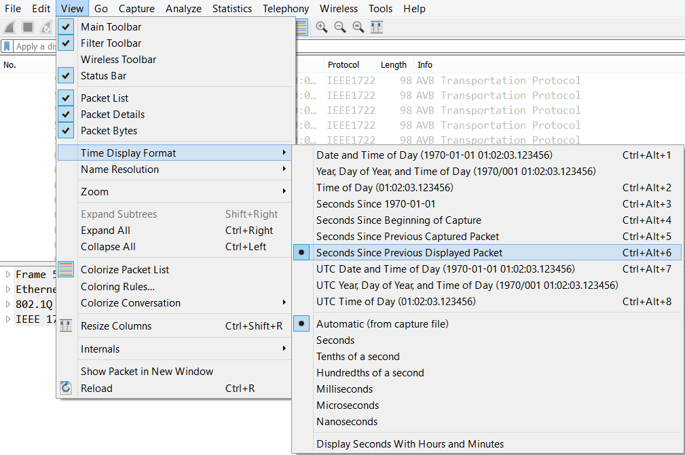
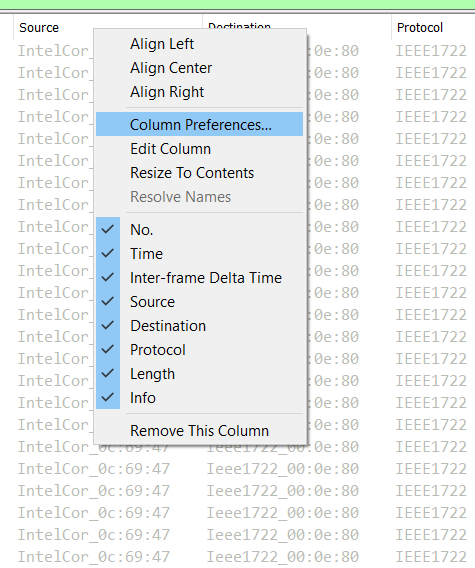
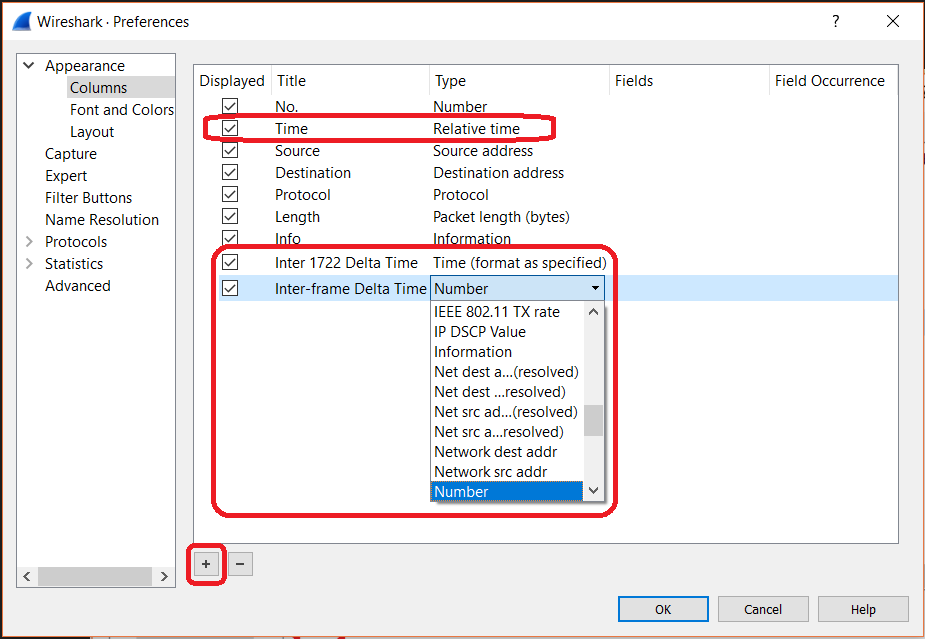
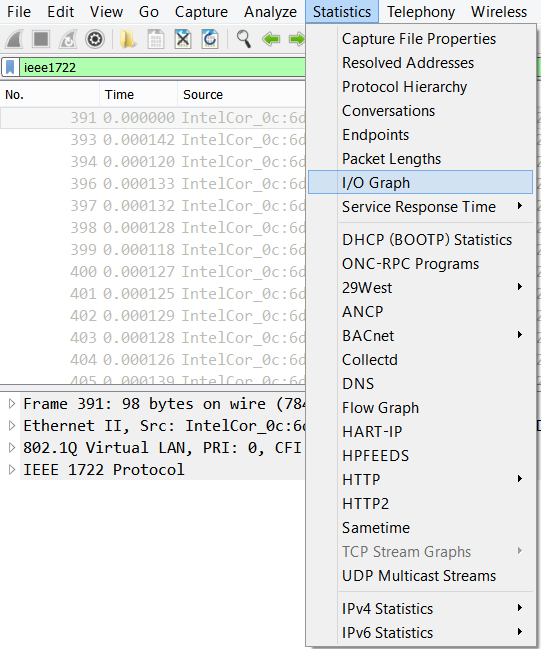
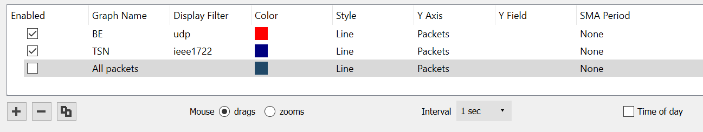

You can use Wireshark*, a network protocol analyzer to analyze network traffic. Once you have run the IEEE 802.1Qav demo, you interpret and understand the results in the resulting .pcap file using Wireshark.
- On the host machine, open the captured packets file (*.pcap) using Wireshark.
- Set the time display to "Seconds Since Previous Displayed Packet" as shown below. (View> Time Display Format> Seconds Since Previous Displayed Packet)
Wireshark: Setting the Time Display Format

- Edit Column Preferences by right-clicking the Column Heading and then selecting 'Column Preferences' as shown below.
Wireshark: Editing Column Preferences

- In the Column Preferences window, update the Time column Type to Relative Time. This can be done by selecting the Time row, and double-clicking on the Type and select 'Relative time' from the drop-down menu. Additionally, click the + icon in the bottom left of the window to add the following new columns as shown below:
- Title: Inter 1722 Delta Time; Type: Time (format as specified)
- Title: Inter-frame Delta Time; Type: Delta time
Wireshark: Adding New Columns

Note
Inter-frame Delta Time is the time difference between packets of different types, such as BE packets, IEEE1772 packets, and others. Inter 1722 Delta Time is the time difference between IEEE1722 packets only.
- In the Statistics tab, select I/O Graph.
Wireshark: I/O Graph Setting

- Add packet filters for ieee1722 by clicking the + icon on the bottom left of the generated graph. Double-click the Display Filter area in the new row, and enter "ieee1722." Then double-click the title for the new row and rename it to "TSN."
Note
To change the color of the plot lines, double-click next to the color boxes in the Color column and select the color you want to use.
Add IEEE1722 and UDP Display Filters

Wireshark is now configured to run and analyze network traffic for each of the three IEEE 802.1Qav scenarios.
You can now analyze network traffic for each of the scenarios: